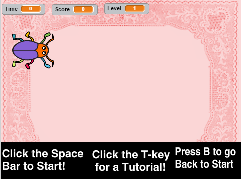

Final Project Content
Description
I did my Final Project for this class in Scratch. I used all of the things I learned this year to make a complex game that is user-friendly and fun to play. I used if/else, if/elif/else statements, forever, and repeat until statements to further enhance my game.
Below is a screenshot of my Final Game
